Alocação de parcelas com QGIS
Autor
Atenção
Essa aula foi elaborada como requisito da disciplina de pós-gradução “Docência orientada I”, sendo material de apoio e não possuindo fins comerciais.
Download links
Obtenção de imagens
Através do software SASPlanet é possível obter imagens do Google Earth (entre outras fontes) georreferenciadas.
Selecionar o imageamento do Google Maps e posteriormente encontrar a área de interesse
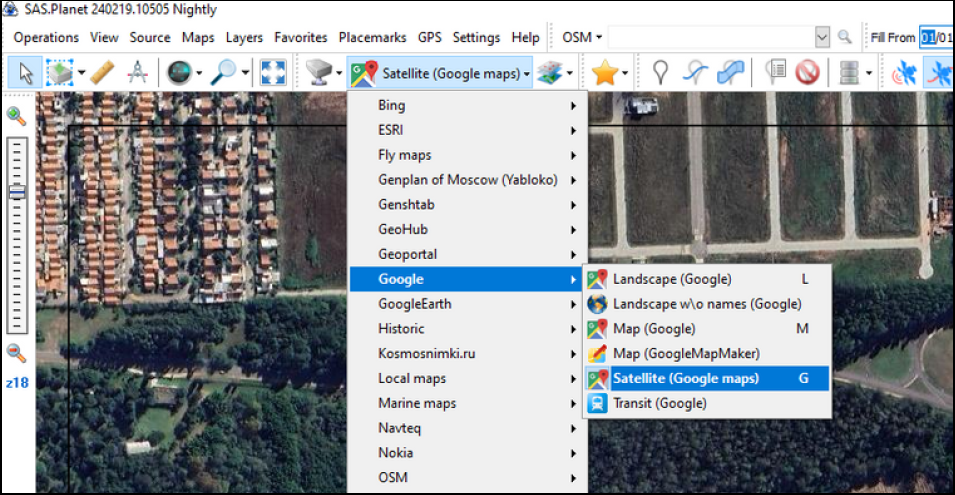Após localizar a área de interesse, clicar na ferramente de seleção e selecionar a área em que serão instaladas as parcelas de inventário.
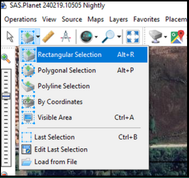Na aba “download”, selecionar a zona UTM na janela “zooms”. Clique aqui para ver sua UTM zone.
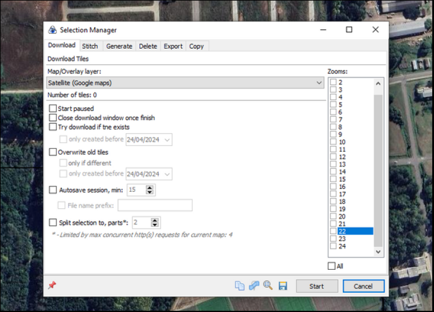Na aba “Stitch”, selecionar o “Outputformat” GeoTIFF e definir o local em que a imagem será salva. Isso irá garantir que a imagem seja exportada georreferenciada.
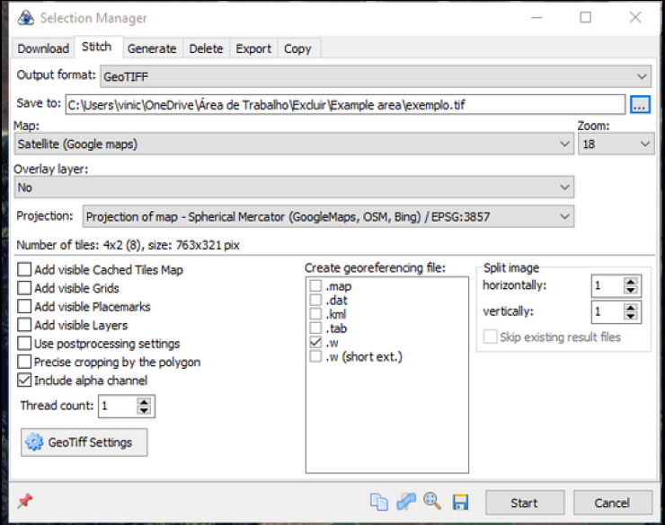Delimitação da área
Através do software QGIS conseguimos distribuir as parcelas de forma sistemática ou aleatória e exportar o mapa para um app mobile.
Passo a passo - QGIS
Primeiramente, inserir a imagem exportada pelo SASPlanet no QGIS. Para isso, basta arrastar o arquivo .tif exportado.
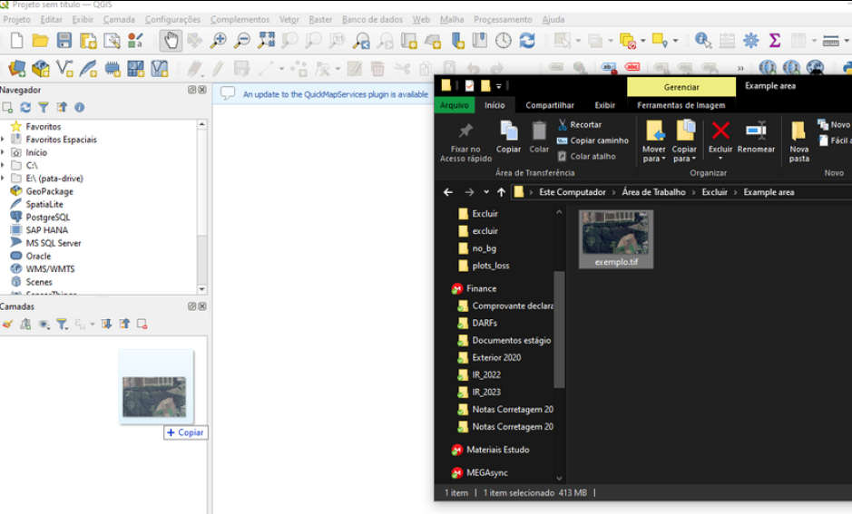Após isso, devemos criar uma nova camada de geometria “Polígono” para definir os limites do talhão em que desejamos fazer o inventário. “Camada” -> “Criar nova camada” -> “Nova Camada Shapefile”
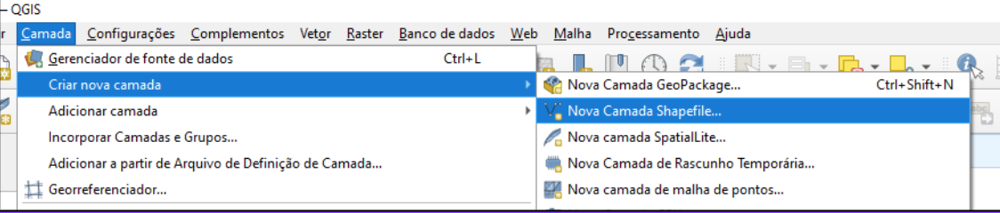Criação dos limites do talhão
Selecionar um local para salvar o shapefile e posteriormente selecionar “Tipo de geometria” -> “Polígono”. Clicar em “ok”.
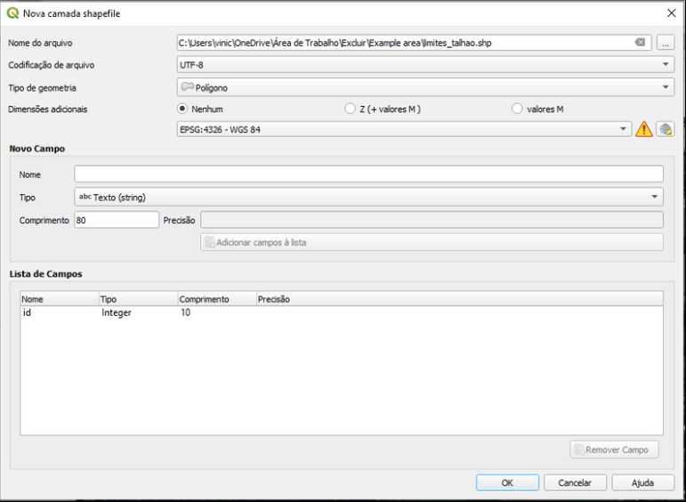Para habilitar edições do shapefile criado, devemos clicar com o direito em cima do shapefile e em “Alternar Edição”. Isso irá habilitar as ferramentas que permitem criar um polígono.
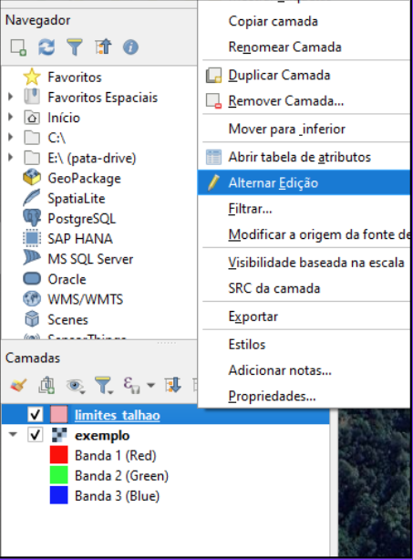Para inicar a criação basta clicar em na ferramenta “Adicionar Polígono”
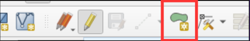Após isso, basta clicar com o botão esquerdo nas bordas do talhão e posteriormente clicar com o direito para finalizar a delimitação.
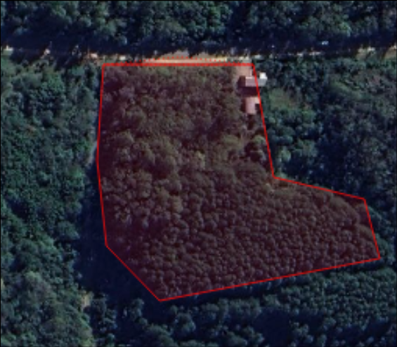Posteriormente, clicar no disquete para salvar e no lápis para desabilitar a edição da camada.
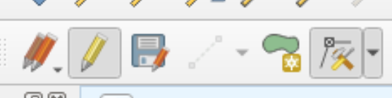Alocação de parcelas
A alocação das parcelas de inventário florestal pode ser realizada de forma manual, criando um shapefile de pontos e alocando cada ponto manualmente ou utilizar a ferramenta nativa “Pontos Regulares”.
Alocação manual de parcelas
“Camada” -> “Criar nova camada” -> “Nova Camada Shapefile”. Selecionar o “tipo de geometria” -> “Ponto”.
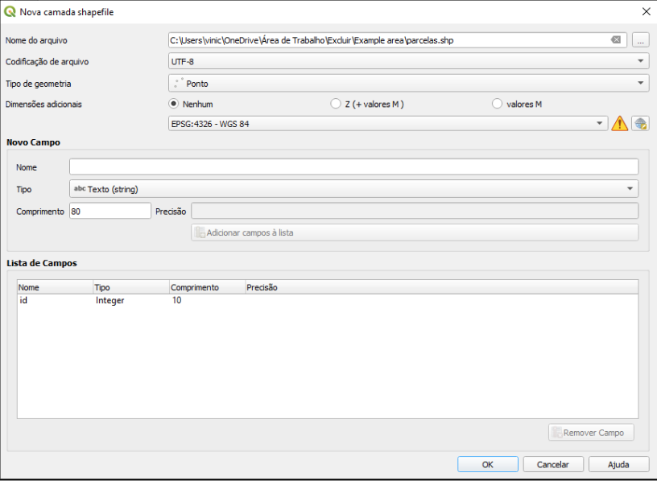Após isso, basta habilitar a edição da camada clicando no lápis e distribuir as parcelas conforme necessário.
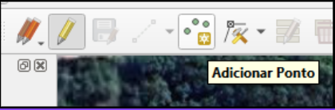A ferramentas “Pontos Regulares” cria um grid de parcelas ou parcelas aleatórias com uma distância entre sí pré definidas. Após criar o grid de parcelas nasta recortar o grid usando o shapefile dos limites do talhão.
Alocação automática de parcelas
“Vetor” -> “Investigar” -> “Pontos Regulares”. Definir o shapefile do limite do talhão como “extensão de entrada”.
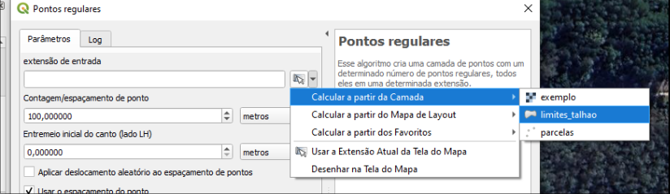O campo “Contagem/Espaçamento de ponto” define qual distância uma parcela terá da outra. O campo “Entremeio Inicial do canto” define a distância da borda. Se a opção “Aplicar deslocamento aleatório ao espaçamento de pontos” for selecionada, a alocação acontecerá de forma aleatória.
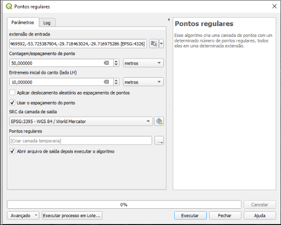Após distribuídas as parcelas, será necessário recortar somente as parcelas que caíram dentro dos limites do talhão. “Vetor” -> “Geoprocessamento” -> “Recortar”
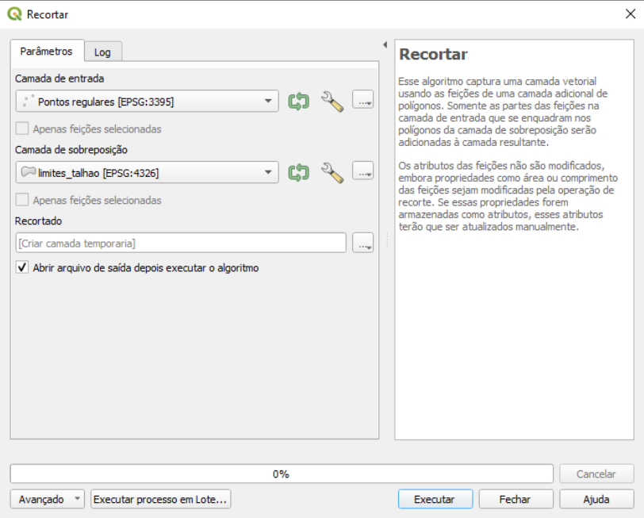Selecionar os pontos criados pela ferramenta anterior como “camada de entrada” e os limites do talhão como “camada de sobreposição”. Após executar, uma nova camada contendo apenas os pontos dentro do talhão será criada, e poderá ser usada como base para o inventário florestal.
Numeração de parcelas
Podemos mudar as propriedades do shapefile contendo as parcelas de modo que o número da parcela seja mostrada no mapa.
Selecionando a opção “Desenhar buffer de texto” o número das parcelas será mostrado no mapa.
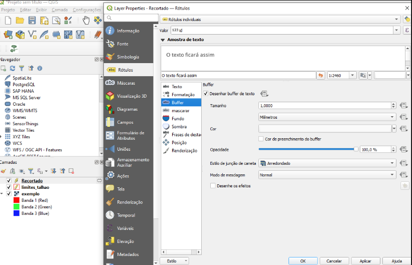A numeração usada ainda é a do layer inicial não recortado e, devido a isso, a numeração não está sequêncis. Tal fato não será um problema nesta aula.
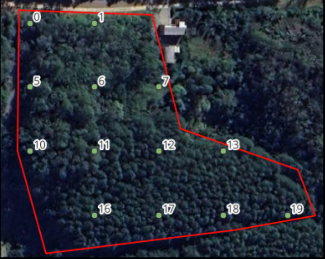Criar buffer de parcela
Podemos criar um buffer com o limite da área da parcela para ajudar na localização em campo. Supondo que nossas parcelas possuem 400m² e são circulares, seu raio é 11,284m. $$ r = \sqrt{\frac{\text{área}}{\pi}} $$
“Vetor” -> “Geoprocessamento” -> “Buffer”
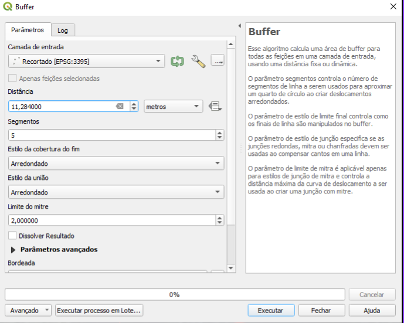Selecionando o shapefile das parcelas como “Camada de entrada” e definindo a “Distância” como 11,284 metros conseguimos criar um buffer circular de 400m² ao redor de cada parcela. Após isso, podemos acessar as propriedades do buffer criado e na aba “simbologia”, definir a “opacidade” para 50%, o que irá permitir a visualização do centro da parcela. O buffer nos permite verificar que algumas parcelas acabam ficando parcialmente fora do talhão e que deveríamos remove-las. Para fins práticos, iremos mantê-las nesta aula.
Exportação do mapa para o APP Avenza Maps
Para facilitar a chegada o local exato da parcela em campo, podemos utilizar o aplicativo mobile “Avenza Maps”.
Criação do Layout
Apertando Ctrl + P. dentro do QGIS criar um painel de Layout. Esse é o local onde preparamos os mapas
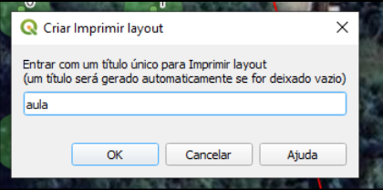 Na lateral esquerda podemos clicar em “Adicionar Mapa” e definir a área onde o mapa sera alocado. 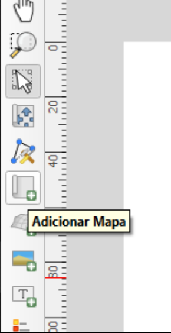 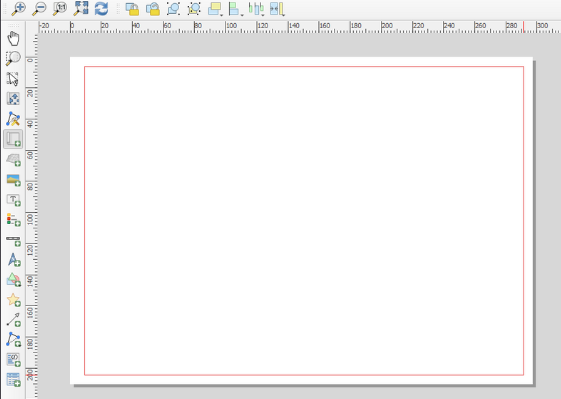 Selecionando a ferramenta “Mover o conteúdo do item” podemos posicionar o mapa da melhor forma. 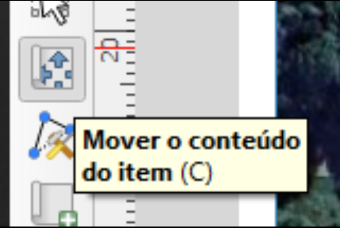 Usando a barra lateral esquerda podemos também adicionar uma rosa dos ventos e um título ao mapa 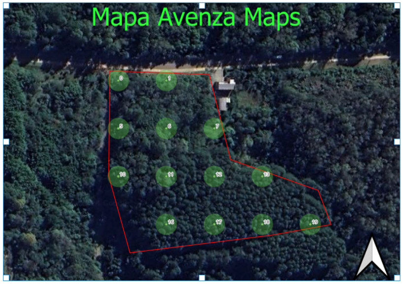
Exportação
Para exportar o mapa basta clicar em “Layout”, no menu superior, e em “Exportar como PDF” 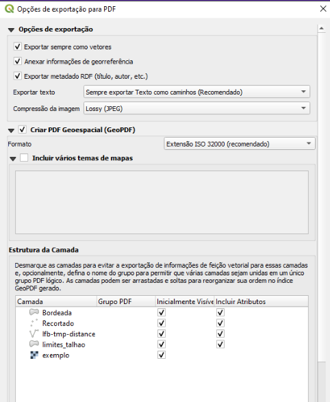
As opções “Exportar sempre como vetores” e “Criar PDF Geoespacial” devem estar selecionadas, de modo que o PDF exporte consigo as coordenadas de cada shapefile. Após isso, o mapa estmkdoa pronto para ser utilizado no celular.
Introdução ao Avenza Maps
O aplicativo mobile Avenza Maps permite a importação de mapas para o celular, o que permite utilizar o mesmo como ferramenta para se localizar e acessar as coordenadas corretas das parcelas.
Adicionar mapa ao APP
Para exportar o mapa basta clicar em “Layout”, no menu superior, e em “Exportar como PDF”
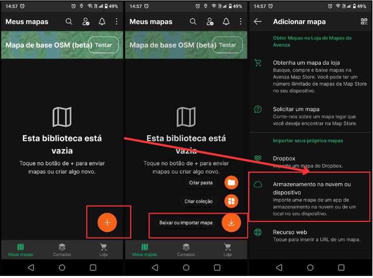Após isso, basta achar o mapa no dispositivo e carrega-lo para o app. 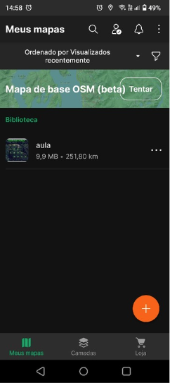
O Avenza Maps, assim como QGIS, possui diversas funções e não caberia nesta aula a explicação de todas as suas funcionalidades. Para mais informações, seguem materiais de estudo que podem ajudar os interessados a aprenderem mais sobre as aplicações utilizadas nesta aula:
Muito bem!
Com esses aplicativos gratuitos, será possível planejar e executar seus primeiros inventários. A pratica leva a perfeição e a integração destas ferramentas com as atividades diárias é a maneira mais eficiênte de se absorver conhecimento sobre as mesmas.